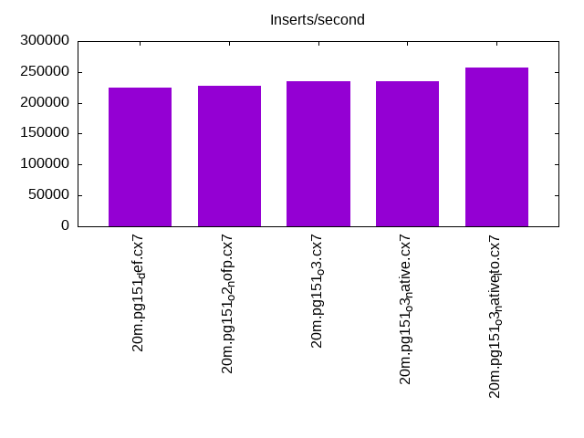
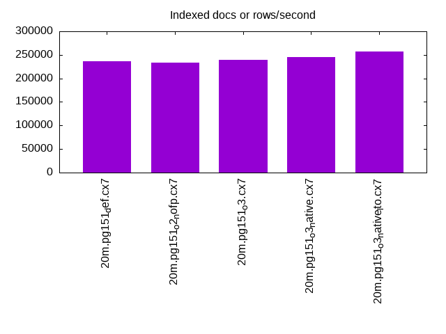
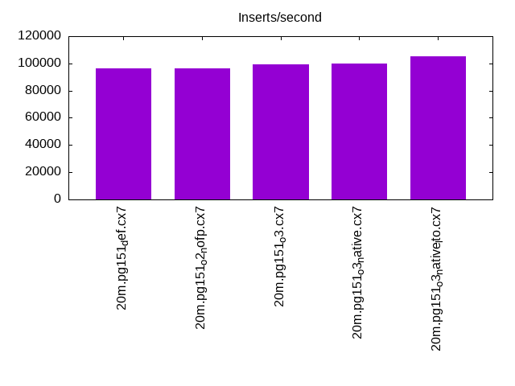
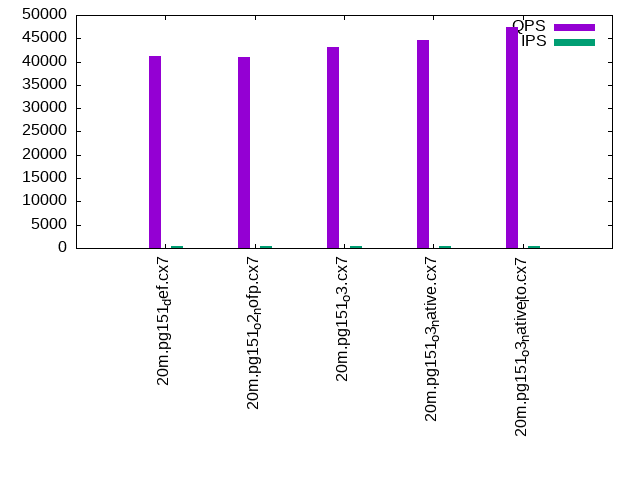
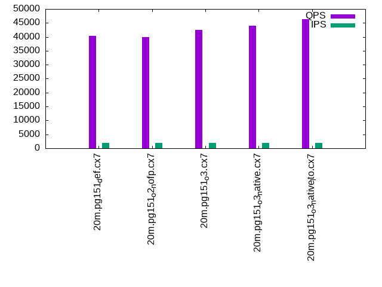
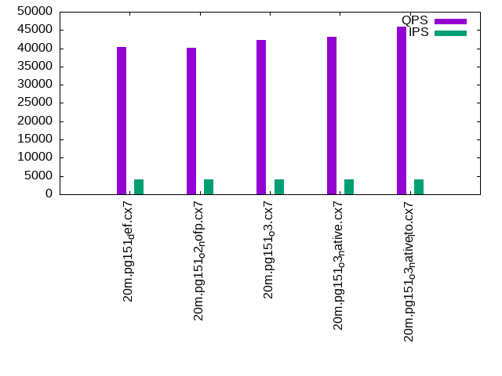

This is a report for the insert benchmark with 20M docs and 4 client(s). It is generated by scripts (bash, awk, sed) and Tufte might not be impressed. An overview of the insert benchmark is here and a short update is here. Below, by DBMS, I mean DBMS+version.config. An example is my8020.c10b40 where my means MySQL, 8020 is version 8.0.20 and c10b40 is the name for the configuration file.
The test server has 8 AMD cores, 16G RAM and an NVMe SSD. It is described here as the Beelink. The benchmark was run with 4 clients and there were 1 or 2 connections per client (1 for queries, 1 for inserts). It uses 1 table. It loads 20M rows without secondary indexes, creates secondary indexes, loads another 20M rows then does 3 read+write tests for one hour each that do queries as fast as possible with 100, 500 and then 1000 writes/second/client concurrent with the queries. The database is cached by the storage engine and the only IO is for writes. Clients and the DBMS share one server. The per-database configs are in the per-database subdirectories here.
The tested DBMS are:
The numbers are inserts/s for l.i0 and l.i1, indexed docs (or rows) /s for l.x and queries/s for q*.2. The values are the average rate over the entire test for inserts (IPS) and queries (QPS). The range of values for IPS and QPS is split into 3 parts: bottom 25%, middle 50%, top 25%. Values in the bottom 25% have a red background, values in the top 25% have a green background and values in the middle have no color. A gray background is used for values that can be ignored because the DBMS did not sustain the target insert rate. Red backgrounds are not used when the minimum value is within 80% of the max value.
| dbms | l.i0 | l.x | l.i1 | q100.1 | q500.1 | q1000.1 |
|---|---|---|---|---|---|---|
| 20m.pg151_def.cx7 | 224719 | 236470 | 96154 | 41165 | 40418 | 40385 |
| 20m.pg151_o2_nofp.cx7 | 227273 | 233721 | 96618 | 41024 | 39933 | 40137 |
| 20m.pg151_o3.cx7 | 235294 | 239286 | 99502 | 43204 | 42448 | 42232 |
| 20m.pg151_o3_native.cx7 | 235294 | 245122 | 100000 | 44736 | 43910 | 43123 |
| 20m.pg151_o3_native_lto.cx7 | 256410 | 257692 | 105263 | 47361 | 46330 | 45924 |
This table has relative throughput, throughput for the DBMS relative to the DBMS in the first line, using the absolute throughput from the previous table.
| dbms | l.i0 | l.x | l.i1 | q100.1 | q500.1 | q1000.1 |
|---|---|---|---|---|---|---|
| 20m.pg151_def.cx7 | 1.00 | 1.00 | 1.00 | 1.00 | 1.00 | 1.00 |
| 20m.pg151_o2_nofp.cx7 | 1.01 | 0.99 | 1.00 | 1.00 | 0.99 | 0.99 |
| 20m.pg151_o3.cx7 | 1.05 | 1.01 | 1.03 | 1.05 | 1.05 | 1.05 |
| 20m.pg151_o3_native.cx7 | 1.05 | 1.04 | 1.04 | 1.09 | 1.09 | 1.07 |
| 20m.pg151_o3_native_lto.cx7 | 1.14 | 1.09 | 1.09 | 1.15 | 1.15 | 1.14 |
This lists the average rate of inserts/s for the tests that do inserts concurrent with queries. For such tests the query rate is listed in the table above. The read+write tests are setup so that the insert rate should match the target rate every second. Cells that are not at least 95% of the target have a red background to indicate a failure to satisfy the target.
| dbms | q100.1 | q500.1 | q1000.1 |
|---|---|---|---|
| pg151_def.cx7 | 399 | 1994 | 3989 |
| pg151_o2_nofp.cx7 | 399 | 1994 | 3989 |
| pg151_o3.cx7 | 399 | 1994 | 3989 |
| pg151_o3_native.cx7 | 399 | 1993 | 3989 |
| pg151_o3_native_lto.cx7 | 399 | 1994 | 3989 |
| target | 400 | 2000 | 4000 |
l.i0: load without secondary indexes. Graphs for performance per 1-second interval are here.
Average throughput:
Insert response time histogram: each cell has the percentage of responses that take <= the time in the header and max is the max response time in seconds. For the max column values in the top 25% of the range have a red background and in the bottom 25% of the range have a green background. The red background is not used when the min value is within 80% of the max value.
| dbms | 256us | 1ms | 4ms | 16ms | 64ms | 256ms | 1s | 4s | 16s | gt | max |
|---|---|---|---|---|---|---|---|---|---|---|---|
| pg151_def.cx7 | 99.953 | 0.048 | 0.011 | ||||||||
| pg151_o2_nofp.cx7 | 99.959 | 0.041 | 0.011 | ||||||||
| pg151_o3.cx7 | 99.969 | 0.030 | 0.011 | ||||||||
| pg151_o3_native.cx7 | 99.965 | 0.034 | 0.010 | ||||||||
| pg151_o3_native_lto.cx7 | 0.004 | 99.959 | 0.037 | 0.010 |
Performance metrics for the DBMS listed above. Some are normalized by throughput, others are not. Legend for results is here.
ips qps rps rmbps wps wmbps rpq rkbpq wpi wkbpi csps cpups cspq cpupq dbgb1 dbgb2 rss maxop p50 p99 tag 224719 0 0 0.0 268.9 97.7 0.000 0.000 0.001 0.445 24692 70.8 0.110 25 2.1 5.6 0.0 0.011 65451 41554 20m.pg151_def.cx7 227273 0 0 0.0 270.1 98.0 0.000 0.000 0.001 0.442 25512 71.0 0.112 25 2.1 5.6 0.0 0.011 65829 13585 20m.pg151_o2_nofp.cx7 235294 0 0 0.0 285.1 103.4 0.000 0.000 0.001 0.450 25881 70.4 0.110 24 2.1 5.6 0.0 0.011 69725 22584 20m.pg151_o3.cx7 235294 0 0 0.0 285.9 103.9 0.000 0.000 0.001 0.452 26318 70.4 0.112 24 2.1 5.6 0.0 0.010 70747 27970 20m.pg151_o3_native.cx7 256410 0 0 0.0 307.5 111.3 0.000 0.000 0.001 0.445 28137 69.8 0.110 22 2.1 5.6 0.0 0.010 75916 13585 20m.pg151_o3_native_lto.cx7
l.x: create secondary indexes.
Average throughput:
Performance metrics for the DBMS listed above. Some are normalized by throughput, others are not. Legend for results is here.
ips qps rps rmbps wps wmbps rpq rkbpq wpi wkbpi csps cpups cspq cpupq dbgb1 dbgb2 rss maxop p50 p99 tag 236470 0 0 0.0 108.8 51.1 0.000 0.000 0.000 0.221 713 12.7 0.003 4 3.9 9.0 0.0 0.004 NA NA 20m.pg151_def.cx7 233721 0 0 0.0 134.3 63.0 0.000 0.000 0.001 0.276 744 12.7 0.003 4 3.9 9.0 0.0 0.004 NA NA 20m.pg151_o2_nofp.cx7 239286 0 0 0.0 111.9 52.5 0.000 0.000 0.000 0.225 690 12.8 0.003 4 3.9 9.0 0.0 0.003 NA NA 20m.pg151_o3.cx7 245122 0 0 0.0 128.2 60.3 0.000 0.000 0.001 0.252 702 12.6 0.003 4 3.9 9.0 0.0 0.003 NA NA 20m.pg151_o3_native.cx7 257692 0 0 0.0 120.9 56.7 0.000 0.000 0.000 0.225 812 12.7 0.003 4 3.9 9.0 0.0 0.003 NA NA 20m.pg151_o3_native_lto.cx7
l.i1: continue load after secondary indexes created. Graphs for performance per 1-second interval are here.
Average throughput:
Insert response time histogram: each cell has the percentage of responses that take <= the time in the header and max is the max response time in seconds. For the max column values in the top 25% of the range have a red background and in the bottom 25% of the range have a green background. The red background is not used when the min value is within 80% of the max value.
| dbms | 256us | 1ms | 4ms | 16ms | 64ms | 256ms | 1s | 4s | 16s | gt | max |
|---|---|---|---|---|---|---|---|---|---|---|---|
| pg151_def.cx7 | 99.787 | 0.083 | 0.130 | 0.055 | |||||||
| pg151_o2_nofp.cx7 | 99.770 | 0.097 | 0.133 | 0.052 | |||||||
| pg151_o3.cx7 | 99.778 | 0.091 | 0.130 | 0.001 | 0.090 | ||||||
| pg151_o3_native.cx7 | 99.775 | 0.086 | 0.138 | 0.001 | 0.107 | ||||||
| pg151_o3_native_lto.cx7 | 99.790 | 0.078 | 0.132 | 0.055 |
Performance metrics for the DBMS listed above. Some are normalized by throughput, others are not. Legend for results is here.
ips qps rps rmbps wps wmbps rpq rkbpq wpi wkbpi csps cpups cspq cpupq dbgb1 dbgb2 rss maxop p50 p99 tag 96154 0 0 0.0 434.3 148.8 0.000 0.000 0.005 1.585 21100 63.0 0.219 52 8.6 25.2 0.0 0.055 25522 4445 20m.pg151_def.cx7 96618 0 0 0.0 432.4 148.5 0.000 0.000 0.004 1.574 21152 62.9 0.219 52 8.6 25.2 0.0 0.052 25722 4395 20m.pg151_o2_nofp.cx7 99502 0 0 0.0 438.6 150.5 0.000 0.000 0.004 1.549 21480 63.0 0.216 51 8.6 25.1 0.0 0.090 26481 4095 20m.pg151_o3.cx7 100000 0 0 0.0 441.7 151.3 0.000 0.000 0.004 1.549 21622 63.0 0.216 50 8.6 25.2 0.0 0.107 26635 3946 20m.pg151_o3_native.cx7 105263 0 0 0.0 452.1 155.7 0.000 0.000 0.004 1.515 22456 63.2 0.213 48 8.6 24.9 0.0 0.055 28070 4095 20m.pg151_o3_native_lto.cx7
q100.1: range queries with 100 insert/s per client. Graphs for performance per 1-second interval are here.
Average throughput:
Query response time histogram: each cell has the percentage of responses that take <= the time in the header and max is the max response time in seconds. For max values in the top 25% of the range have a red background and in the bottom 25% of the range have a green background. The red background is not used when the min value is within 80% of the max value.
| dbms | 256us | 1ms | 4ms | 16ms | 64ms | 256ms | 1s | 4s | 16s | gt | max |
|---|---|---|---|---|---|---|---|---|---|---|---|
| pg151_def.cx7 | 99.980 | 0.013 | 0.007 | nonzero | 0.008 | ||||||
| pg151_o2_nofp.cx7 | 99.979 | 0.014 | 0.006 | nonzero | 0.008 | ||||||
| pg151_o3.cx7 | 99.983 | 0.011 | 0.006 | nonzero | 0.006 | ||||||
| pg151_o3_native.cx7 | 99.984 | 0.011 | 0.005 | nonzero | 0.006 | ||||||
| pg151_o3_native_lto.cx7 | 99.986 | 0.009 | 0.005 | nonzero | 0.007 |
Insert response time histogram: each cell has the percentage of responses that take <= the time in the header and max is the max response time in seconds. For max values in the top 25% of the range have a red background and in the bottom 25% of the range have a green background. The red background is not used when the min value is within 80% of the max value.
| dbms | 256us | 1ms | 4ms | 16ms | 64ms | 256ms | 1s | 4s | 16s | gt | max |
|---|---|---|---|---|---|---|---|---|---|---|---|
| pg151_def.cx7 | 99.410 | 0.590 | 0.008 | ||||||||
| pg151_o2_nofp.cx7 | 99.264 | 0.736 | 0.009 | ||||||||
| pg151_o3.cx7 | 99.215 | 0.785 | 0.007 | ||||||||
| pg151_o3_native.cx7 | 99.764 | 0.236 | 0.008 | ||||||||
| pg151_o3_native_lto.cx7 | 99.736 | 0.264 | 0.008 |
Performance metrics for the DBMS listed above. Some are normalized by throughput, others are not. Legend for results is here.
ips qps rps rmbps wps wmbps rpq rkbpq wpi wkbpi csps cpups cspq cpupq dbgb1 dbgb2 rss maxop p50 p99 tag 399 41165 0 0.0 287.6 12.4 0.000 0.000 0.721 31.768 157052 50.5 3.815 98 8.7 23.5 0.0 0.008 10405 8599 20m.pg151_def.cx7 399 41024 0 0.0 287.8 12.5 0.000 0.000 0.722 31.979 156440 50.4 3.813 98 8.7 23.5 0.0 0.008 10357 8519 20m.pg151_o2_nofp.cx7 399 43204 0 0.0 288.0 12.4 0.000 0.000 0.723 31.831 164847 50.3 3.816 93 8.7 24.0 0.0 0.006 11048 9510 20m.pg151_o3.cx7 399 44736 0 0.0 288.9 12.5 0.000 0.000 0.724 32.157 170551 50.4 3.812 90 8.7 24.1 0.0 0.006 11316 9206 20m.pg151_o3_native.cx7 399 47361 0 0.0 291.2 12.6 0.000 0.000 0.730 32.261 180571 50.4 3.813 85 8.7 24.9 0.0 0.007 11891 10723 20m.pg151_o3_native_lto.cx7
q500.1: range queries with 500 insert/s per client. Graphs for performance per 1-second interval are here.
Average throughput:
Query response time histogram: each cell has the percentage of responses that take <= the time in the header and max is the max response time in seconds. For max values in the top 25% of the range have a red background and in the bottom 25% of the range have a green background. The red background is not used when the min value is within 80% of the max value.
| dbms | 256us | 1ms | 4ms | 16ms | 64ms | 256ms | 1s | 4s | 16s | gt | max |
|---|---|---|---|---|---|---|---|---|---|---|---|
| pg151_def.cx7 | 99.954 | 0.027 | 0.017 | 0.001 | nonzero | 0.020 | |||||
| pg151_o2_nofp.cx7 | 99.952 | 0.030 | 0.017 | 0.001 | nonzero | 0.019 | |||||
| pg151_o3.cx7 | 99.957 | 0.025 | 0.016 | 0.001 | nonzero | 0.019 | |||||
| pg151_o3_native.cx7 | 99.955 | 0.028 | 0.017 | 0.001 | 0.015 | ||||||
| pg151_o3_native_lto.cx7 | 99.961 | 0.022 | 0.016 | 0.001 | nonzero | 0.028 |
Insert response time histogram: each cell has the percentage of responses that take <= the time in the header and max is the max response time in seconds. For max values in the top 25% of the range have a red background and in the bottom 25% of the range have a green background. The red background is not used when the min value is within 80% of the max value.
| dbms | 256us | 1ms | 4ms | 16ms | 64ms | 256ms | 1s | 4s | 16s | gt | max |
|---|---|---|---|---|---|---|---|---|---|---|---|
| pg151_def.cx7 | 93.118 | 6.757 | 0.119 | 0.006 | 0.107 | ||||||
| pg151_o2_nofp.cx7 | 93.882 | 5.982 | 0.132 | 0.004 | 0.066 | ||||||
| pg151_o3.cx7 | 94.574 | 5.312 | 0.110 | 0.004 | 0.111 | ||||||
| pg151_o3_native.cx7 | 98.562 | 1.400 | 0.037 | 0.033 | |||||||
| pg151_o3_native_lto.cx7 | 96.807 | 3.143 | 0.050 | 0.033 |
Performance metrics for the DBMS listed above. Some are normalized by throughput, others are not. Legend for results is here.
ips qps rps rmbps wps wmbps rpq rkbpq wpi wkbpi csps cpups cspq cpupq dbgb1 dbgb2 rss maxop p50 p99 tag 1994 40418 2 0.0 268.4 20.6 0.000 0.000 0.135 10.559 153111 51.4 3.788 102 10.2 20.7 0.0 0.020 10293 8330 20m.pg151_def.cx7 1994 39933 2 0.0 269.0 20.6 0.000 0.000 0.135 10.562 151252 51.3 3.788 103 10.2 20.7 0.0 0.019 10089 8410 20m.pg151_o2_nofp.cx7 1994 42448 2 0.0 271.1 20.5 0.000 0.000 0.136 10.538 160893 51.2 3.790 96 10.2 20.9 0.0 0.019 10772 8742 20m.pg151_o3.cx7 1993 43910 2 0.0 272.7 20.5 0.000 0.000 0.137 10.549 166687 51.3 3.796 93 10.2 21.0 0.0 0.015 11160 9238 20m.pg151_o3_native.cx7 1994 46330 2 0.0 273.5 20.4 0.000 0.000 0.137 10.495 175680 51.3 3.792 89 10.2 21.5 0.0 0.028 11603 10264 20m.pg151_o3_native_lto.cx7
q1000.1: range queries with 1000 insert/s per client. Graphs for performance per 1-second interval are here.
Average throughput:
Query response time histogram: each cell has the percentage of responses that take <= the time in the header and max is the max response time in seconds. For max values in the top 25% of the range have a red background and in the bottom 25% of the range have a green background. The red background is not used when the min value is within 80% of the max value.
| dbms | 256us | 1ms | 4ms | 16ms | 64ms | 256ms | 1s | 4s | 16s | gt | max |
|---|---|---|---|---|---|---|---|---|---|---|---|
| pg151_def.cx7 | 99.899 | 0.071 | 0.029 | 0.001 | 0.014 | ||||||
| pg151_o2_nofp.cx7 | 99.899 | 0.072 | 0.028 | 0.001 | nonzero | 0.018 | |||||
| pg151_o3.cx7 | 99.905 | 0.066 | 0.028 | 0.001 | nonzero | 0.019 | |||||
| pg151_o3_native.cx7 | 99.906 | 0.065 | 0.029 | 0.001 | nonzero | 0.020 | |||||
| pg151_o3_native_lto.cx7 | 99.916 | 0.056 | 0.027 | 0.001 | 0.016 |
Insert response time histogram: each cell has the percentage of responses that take <= the time in the header and max is the max response time in seconds. For max values in the top 25% of the range have a red background and in the bottom 25% of the range have a green background. The red background is not used when the min value is within 80% of the max value.
| dbms | 256us | 1ms | 4ms | 16ms | 64ms | 256ms | 1s | 4s | 16s | gt | max |
|---|---|---|---|---|---|---|---|---|---|---|---|
| pg151_def.cx7 | 94.106 | 5.801 | 0.094 | 0.034 | |||||||
| pg151_o2_nofp.cx7 | 94.766 | 5.152 | 0.082 | 0.027 | |||||||
| pg151_o3.cx7 | 93.353 | 6.544 | 0.103 | 0.035 | |||||||
| pg151_o3_native.cx7 | 95.741 | 4.199 | 0.060 | 0.025 | |||||||
| pg151_o3_native_lto.cx7 | 95.317 | 4.617 | 0.067 | 0.030 |
Performance metrics for the DBMS listed above. Some are normalized by throughput, others are not. Legend for results is here.
ips qps rps rmbps wps wmbps rpq rkbpq wpi wkbpi csps cpups cspq cpupq dbgb1 dbgb2 rss maxop p50 p99 tag 3989 40385 28 0.2 321.7 27.3 0.001 0.006 0.081 7.016 151488 52.5 3.751 104 12.6 21.3 0.0 0.014 10245 8343 20m.pg151_def.cx7 3989 40137 28 0.2 322.4 27.3 0.001 0.006 0.081 7.013 150480 52.4 3.749 104 12.6 21.3 0.0 0.018 10149 8039 20m.pg151_o2_nofp.cx7 3989 42232 23 0.2 320.0 27.3 0.001 0.005 0.080 7.011 158642 52.4 3.756 99 12.6 21.5 0.0 0.019 10696 8874 20m.pg151_o3.cx7 3989 43123 24 0.2 321.1 27.3 0.001 0.005 0.081 7.013 162114 52.4 3.759 97 12.6 21.5 0.0 0.020 11000 9241 20m.pg151_o3_native.cx7 3989 45924 25 0.2 323.5 27.3 0.001 0.005 0.081 7.020 172762 52.4 3.762 91 12.6 21.8 0.0 0.016 11555 9805 20m.pg151_o3_native_lto.cx7
l.i0: load without secondary indexes
Performance metrics for all DBMS, not just the ones listed above. Some are normalized by throughput, others are not. Legend for results is here.
ips qps rps rmbps wps wmbps rpq rkbpq wpi wkbpi csps cpups cspq cpupq dbgb1 dbgb2 rss maxop p50 p99 tag 224719 0 0 0.0 268.9 97.7 0.000 0.000 0.001 0.445 24692 70.8 0.110 25 2.1 5.6 0.0 0.011 65451 41554 20m.pg151_def.cx7 227273 0 0 0.0 270.1 98.0 0.000 0.000 0.001 0.442 25512 71.0 0.112 25 2.1 5.6 0.0 0.011 65829 13585 20m.pg151_o2_nofp.cx7 235294 0 0 0.0 285.1 103.4 0.000 0.000 0.001 0.450 25881 70.4 0.110 24 2.1 5.6 0.0 0.011 69725 22584 20m.pg151_o3.cx7 235294 0 0 0.0 285.9 103.9 0.000 0.000 0.001 0.452 26318 70.4 0.112 24 2.1 5.6 0.0 0.010 70747 27970 20m.pg151_o3_native.cx7 256410 0 0 0.0 307.5 111.3 0.000 0.000 0.001 0.445 28137 69.8 0.110 22 2.1 5.6 0.0 0.010 75916 13585 20m.pg151_o3_native_lto.cx7
l.x: create secondary indexes
Performance metrics for all DBMS, not just the ones listed above. Some are normalized by throughput, others are not. Legend for results is here.
ips qps rps rmbps wps wmbps rpq rkbpq wpi wkbpi csps cpups cspq cpupq dbgb1 dbgb2 rss maxop p50 p99 tag 236470 0 0 0.0 108.8 51.1 0.000 0.000 0.000 0.221 713 12.7 0.003 4 3.9 9.0 0.0 0.004 NA NA 20m.pg151_def.cx7 233721 0 0 0.0 134.3 63.0 0.000 0.000 0.001 0.276 744 12.7 0.003 4 3.9 9.0 0.0 0.004 NA NA 20m.pg151_o2_nofp.cx7 239286 0 0 0.0 111.9 52.5 0.000 0.000 0.000 0.225 690 12.8 0.003 4 3.9 9.0 0.0 0.003 NA NA 20m.pg151_o3.cx7 245122 0 0 0.0 128.2 60.3 0.000 0.000 0.001 0.252 702 12.6 0.003 4 3.9 9.0 0.0 0.003 NA NA 20m.pg151_o3_native.cx7 257692 0 0 0.0 120.9 56.7 0.000 0.000 0.000 0.225 812 12.7 0.003 4 3.9 9.0 0.0 0.003 NA NA 20m.pg151_o3_native_lto.cx7
l.i1: continue load after secondary indexes created
Performance metrics for all DBMS, not just the ones listed above. Some are normalized by throughput, others are not. Legend for results is here.
ips qps rps rmbps wps wmbps rpq rkbpq wpi wkbpi csps cpups cspq cpupq dbgb1 dbgb2 rss maxop p50 p99 tag 96154 0 0 0.0 434.3 148.8 0.000 0.000 0.005 1.585 21100 63.0 0.219 52 8.6 25.2 0.0 0.055 25522 4445 20m.pg151_def.cx7 96618 0 0 0.0 432.4 148.5 0.000 0.000 0.004 1.574 21152 62.9 0.219 52 8.6 25.2 0.0 0.052 25722 4395 20m.pg151_o2_nofp.cx7 99502 0 0 0.0 438.6 150.5 0.000 0.000 0.004 1.549 21480 63.0 0.216 51 8.6 25.1 0.0 0.090 26481 4095 20m.pg151_o3.cx7 100000 0 0 0.0 441.7 151.3 0.000 0.000 0.004 1.549 21622 63.0 0.216 50 8.6 25.2 0.0 0.107 26635 3946 20m.pg151_o3_native.cx7 105263 0 0 0.0 452.1 155.7 0.000 0.000 0.004 1.515 22456 63.2 0.213 48 8.6 24.9 0.0 0.055 28070 4095 20m.pg151_o3_native_lto.cx7
q100.1: range queries with 100 insert/s per client
Performance metrics for all DBMS, not just the ones listed above. Some are normalized by throughput, others are not. Legend for results is here.
ips qps rps rmbps wps wmbps rpq rkbpq wpi wkbpi csps cpups cspq cpupq dbgb1 dbgb2 rss maxop p50 p99 tag 399 41165 0 0.0 287.6 12.4 0.000 0.000 0.721 31.768 157052 50.5 3.815 98 8.7 23.5 0.0 0.008 10405 8599 20m.pg151_def.cx7 399 41024 0 0.0 287.8 12.5 0.000 0.000 0.722 31.979 156440 50.4 3.813 98 8.7 23.5 0.0 0.008 10357 8519 20m.pg151_o2_nofp.cx7 399 43204 0 0.0 288.0 12.4 0.000 0.000 0.723 31.831 164847 50.3 3.816 93 8.7 24.0 0.0 0.006 11048 9510 20m.pg151_o3.cx7 399 44736 0 0.0 288.9 12.5 0.000 0.000 0.724 32.157 170551 50.4 3.812 90 8.7 24.1 0.0 0.006 11316 9206 20m.pg151_o3_native.cx7 399 47361 0 0.0 291.2 12.6 0.000 0.000 0.730 32.261 180571 50.4 3.813 85 8.7 24.9 0.0 0.007 11891 10723 20m.pg151_o3_native_lto.cx7
q500.1: range queries with 500 insert/s per client
Performance metrics for all DBMS, not just the ones listed above. Some are normalized by throughput, others are not. Legend for results is here.
ips qps rps rmbps wps wmbps rpq rkbpq wpi wkbpi csps cpups cspq cpupq dbgb1 dbgb2 rss maxop p50 p99 tag 1994 40418 2 0.0 268.4 20.6 0.000 0.000 0.135 10.559 153111 51.4 3.788 102 10.2 20.7 0.0 0.020 10293 8330 20m.pg151_def.cx7 1994 39933 2 0.0 269.0 20.6 0.000 0.000 0.135 10.562 151252 51.3 3.788 103 10.2 20.7 0.0 0.019 10089 8410 20m.pg151_o2_nofp.cx7 1994 42448 2 0.0 271.1 20.5 0.000 0.000 0.136 10.538 160893 51.2 3.790 96 10.2 20.9 0.0 0.019 10772 8742 20m.pg151_o3.cx7 1993 43910 2 0.0 272.7 20.5 0.000 0.000 0.137 10.549 166687 51.3 3.796 93 10.2 21.0 0.0 0.015 11160 9238 20m.pg151_o3_native.cx7 1994 46330 2 0.0 273.5 20.4 0.000 0.000 0.137 10.495 175680 51.3 3.792 89 10.2 21.5 0.0 0.028 11603 10264 20m.pg151_o3_native_lto.cx7
q1000.1: range queries with 1000 insert/s per client
Performance metrics for all DBMS, not just the ones listed above. Some are normalized by throughput, others are not. Legend for results is here.
ips qps rps rmbps wps wmbps rpq rkbpq wpi wkbpi csps cpups cspq cpupq dbgb1 dbgb2 rss maxop p50 p99 tag 3989 40385 28 0.2 321.7 27.3 0.001 0.006 0.081 7.016 151488 52.5 3.751 104 12.6 21.3 0.0 0.014 10245 8343 20m.pg151_def.cx7 3989 40137 28 0.2 322.4 27.3 0.001 0.006 0.081 7.013 150480 52.4 3.749 104 12.6 21.3 0.0 0.018 10149 8039 20m.pg151_o2_nofp.cx7 3989 42232 23 0.2 320.0 27.3 0.001 0.005 0.080 7.011 158642 52.4 3.756 99 12.6 21.5 0.0 0.019 10696 8874 20m.pg151_o3.cx7 3989 43123 24 0.2 321.1 27.3 0.001 0.005 0.081 7.013 162114 52.4 3.759 97 12.6 21.5 0.0 0.020 11000 9241 20m.pg151_o3_native.cx7 3989 45924 25 0.2 323.5 27.3 0.001 0.005 0.081 7.020 172762 52.4 3.762 91 12.6 21.8 0.0 0.016 11555 9805 20m.pg151_o3_native_lto.cx7
Insert response time histogram
256us 1ms 4ms 16ms 64ms 256ms 1s 4s 16s gt max tag 0.000 0.000 99.953 0.048 0.000 0.000 0.000 0.000 0.000 0.000 0.011 pg151_def.cx7 0.000 0.000 99.959 0.041 0.000 0.000 0.000 0.000 0.000 0.000 0.011 pg151_o2_nofp.cx7 0.000 0.000 99.969 0.030 0.000 0.000 0.000 0.000 0.000 0.000 0.011 pg151_o3.cx7 0.000 0.000 99.965 0.034 0.000 0.000 0.000 0.000 0.000 0.000 0.010 pg151_o3_native.cx7 0.000 0.004 99.959 0.037 0.000 0.000 0.000 0.000 0.000 0.000 0.010 pg151_o3_native_lto.cx7
TODO - determine whether there is data for create index response time
Insert response time histogram
256us 1ms 4ms 16ms 64ms 256ms 1s 4s 16s gt max tag 0.000 0.000 99.787 0.083 0.130 0.000 0.000 0.000 0.000 0.000 0.055 pg151_def.cx7 0.000 0.000 99.770 0.097 0.133 0.000 0.000 0.000 0.000 0.000 0.052 pg151_o2_nofp.cx7 0.000 0.000 99.778 0.091 0.130 0.001 0.000 0.000 0.000 0.000 0.090 pg151_o3.cx7 0.000 0.000 99.775 0.086 0.138 0.001 0.000 0.000 0.000 0.000 0.107 pg151_o3_native.cx7 0.000 0.000 99.790 0.078 0.132 0.000 0.000 0.000 0.000 0.000 0.055 pg151_o3_native_lto.cx7
Query response time histogram
256us 1ms 4ms 16ms 64ms 256ms 1s 4s 16s gt max tag 99.980 0.013 0.007 nonzero 0.000 0.000 0.000 0.000 0.000 0.000 0.008 pg151_def.cx7 99.979 0.014 0.006 nonzero 0.000 0.000 0.000 0.000 0.000 0.000 0.008 pg151_o2_nofp.cx7 99.983 0.011 0.006 nonzero 0.000 0.000 0.000 0.000 0.000 0.000 0.006 pg151_o3.cx7 99.984 0.011 0.005 nonzero 0.000 0.000 0.000 0.000 0.000 0.000 0.006 pg151_o3_native.cx7 99.986 0.009 0.005 nonzero 0.000 0.000 0.000 0.000 0.000 0.000 0.007 pg151_o3_native_lto.cx7
Insert response time histogram
256us 1ms 4ms 16ms 64ms 256ms 1s 4s 16s gt max tag 0.000 0.000 99.410 0.590 0.000 0.000 0.000 0.000 0.000 0.000 0.008 pg151_def.cx7 0.000 0.000 99.264 0.736 0.000 0.000 0.000 0.000 0.000 0.000 0.009 pg151_o2_nofp.cx7 0.000 0.000 99.215 0.785 0.000 0.000 0.000 0.000 0.000 0.000 0.007 pg151_o3.cx7 0.000 0.000 99.764 0.236 0.000 0.000 0.000 0.000 0.000 0.000 0.008 pg151_o3_native.cx7 0.000 0.000 99.736 0.264 0.000 0.000 0.000 0.000 0.000 0.000 0.008 pg151_o3_native_lto.cx7
Query response time histogram
256us 1ms 4ms 16ms 64ms 256ms 1s 4s 16s gt max tag 99.954 0.027 0.017 0.001 nonzero 0.000 0.000 0.000 0.000 0.000 0.020 pg151_def.cx7 99.952 0.030 0.017 0.001 nonzero 0.000 0.000 0.000 0.000 0.000 0.019 pg151_o2_nofp.cx7 99.957 0.025 0.016 0.001 nonzero 0.000 0.000 0.000 0.000 0.000 0.019 pg151_o3.cx7 99.955 0.028 0.017 0.001 0.000 0.000 0.000 0.000 0.000 0.000 0.015 pg151_o3_native.cx7 99.961 0.022 0.016 0.001 nonzero 0.000 0.000 0.000 0.000 0.000 0.028 pg151_o3_native_lto.cx7
Insert response time histogram
256us 1ms 4ms 16ms 64ms 256ms 1s 4s 16s gt max tag 0.000 0.000 93.118 6.757 0.119 0.006 0.000 0.000 0.000 0.000 0.107 pg151_def.cx7 0.000 0.000 93.882 5.982 0.132 0.004 0.000 0.000 0.000 0.000 0.066 pg151_o2_nofp.cx7 0.000 0.000 94.574 5.312 0.110 0.004 0.000 0.000 0.000 0.000 0.111 pg151_o3.cx7 0.000 0.000 98.562 1.400 0.037 0.000 0.000 0.000 0.000 0.000 0.033 pg151_o3_native.cx7 0.000 0.000 96.807 3.143 0.050 0.000 0.000 0.000 0.000 0.000 0.033 pg151_o3_native_lto.cx7
Query response time histogram
256us 1ms 4ms 16ms 64ms 256ms 1s 4s 16s gt max tag 99.899 0.071 0.029 0.001 0.000 0.000 0.000 0.000 0.000 0.000 0.014 pg151_def.cx7 99.899 0.072 0.028 0.001 nonzero 0.000 0.000 0.000 0.000 0.000 0.018 pg151_o2_nofp.cx7 99.905 0.066 0.028 0.001 nonzero 0.000 0.000 0.000 0.000 0.000 0.019 pg151_o3.cx7 99.906 0.065 0.029 0.001 nonzero 0.000 0.000 0.000 0.000 0.000 0.020 pg151_o3_native.cx7 99.916 0.056 0.027 0.001 0.000 0.000 0.000 0.000 0.000 0.000 0.016 pg151_o3_native_lto.cx7
Insert response time histogram
256us 1ms 4ms 16ms 64ms 256ms 1s 4s 16s gt max tag 0.000 0.000 94.106 5.801 0.094 0.000 0.000 0.000 0.000 0.000 0.034 pg151_def.cx7 0.000 0.000 94.766 5.152 0.082 0.000 0.000 0.000 0.000 0.000 0.027 pg151_o2_nofp.cx7 0.000 0.000 93.353 6.544 0.103 0.000 0.000 0.000 0.000 0.000 0.035 pg151_o3.cx7 0.000 0.000 95.741 4.199 0.060 0.000 0.000 0.000 0.000 0.000 0.025 pg151_o3_native.cx7 0.000 0.000 95.317 4.617 0.067 0.000 0.000 0.000 0.000 0.000 0.030 pg151_o3_native_lto.cx7